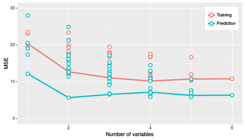

mpg \(\rightarrow\) gpm
weight and yearmpgm <- lm(gpm ~ weight+year, data=imp.auto.train)| Estimate | Std. Error | t value | Pr(>|t|) | |
|---|---|---|---|---|
| (Intercept) | 0.1046842 | 0.0085976 | 12.17605 | 0 |
| weight | 0.0000153 | 0.0000005 | 32.04823 | 0 |
| year | -0.0013503 | 0.0001055 | -12.80096 | 0 |